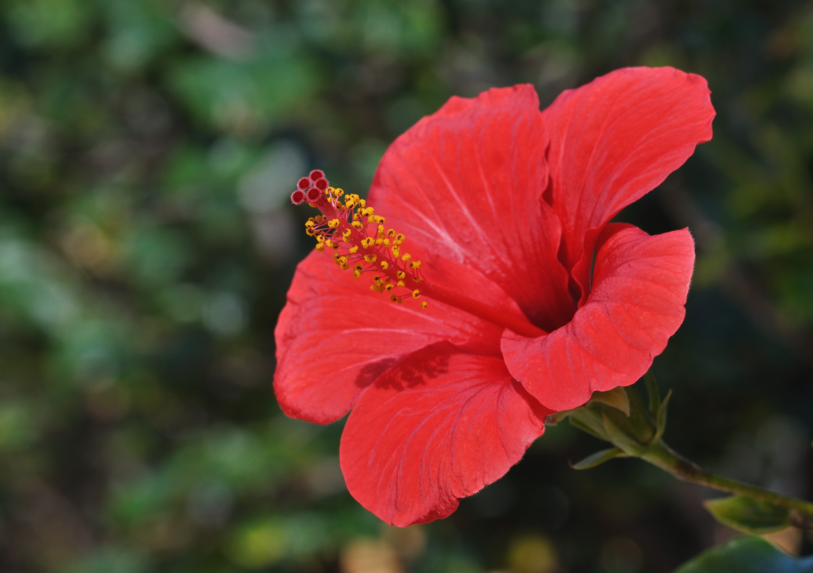
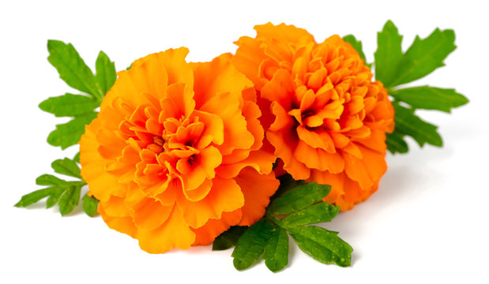
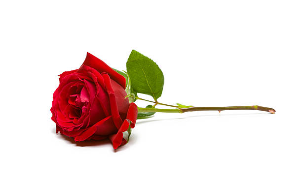
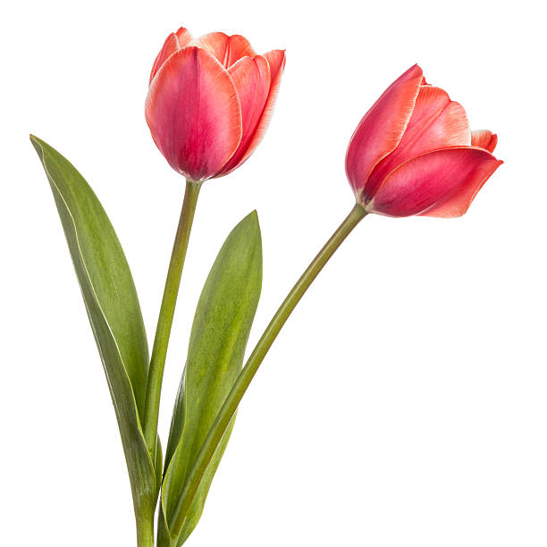

Each daisy you see is actually two flowers in one! In Victorian times, daisies were used as a form of communication.


Hibiscus flowers are not only beautiful, but edible too! Hibiscus flowers are a magnet for butterflies, bees, and hummingbirds, providing them with sweet nectar and vibrant landing spots.
Lotus seeds hold the title for the oldest viable seeds ever germinated! Lotus seeds, roots, and stems are all edible and have been a food source in many cultures for centuries.

Marigold deter pests like nematodes and whiteflies with their strong scent. Marigolds have been used in traditional medicine for centuries, but the scientific evidence for their effectiveness is limited.

Roses have been cultivated for over 3,000 years, making them one of the oldest flowers grown for decoration. The thorns on rose stems are not just there to deter pesky finger pickers. They also help protect the delicate flower buds from hungry herbivores.

The fringed edges of some tulip varieties aren't a natural feature, but the result of a virus! Tulips are actually perennials, meaning they can come back year after year.